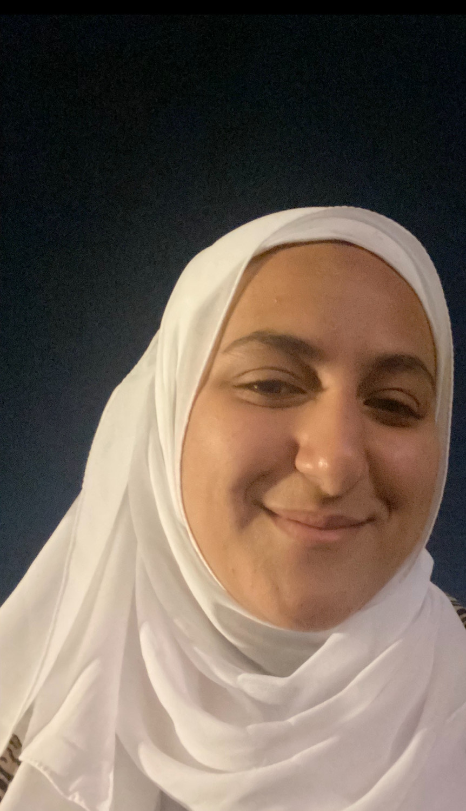

About Me
My name is Habiba Yehia and I live in Canada with my family, but I am originally from Egypt, and It is our 5th year in Canada. Among my four siblings, I am the oldest sister. I also have another sister and two brothers. As part of my weekly practice, I strive to learn new languages, and I go to the library and take classes in it every week. These days, I am learning Spanish, because I am very interested in learning new words and practising lessons, since I am extremely passionate about it.
Mathematics is my favourite subject and I am always eager to learn more about it. Therefore, Web Development is an exciting course for me, and I have already completed an online course about why CSS is important, and I am beginning to gain more knowledge about HTML, and I am also interested in learning how to create visually appealing designs and build secured websites in the IMD program.My passion is to explore and gain more knowledge about advanced fields to get more experience and develop my career. Particularly in this generation, where I have the greatest chance of growing up.
Maintaining a healthy lifestyle and preserving the body are my biggest passions in life. I've also researched what vitamins to consume and drink to maintain basic hormones, but H2o elements are definitley the critical element to preserve our bodies since water displays the major element that keeps the body hydrated and build a healthy body, therefore, it is indispensable in our life.